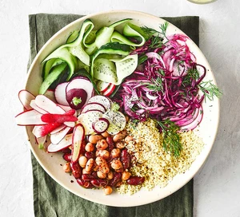

Vegan salad bowl

Whip up an easy vegan salad, with beans, radish, pickled cabbage and couscous. Bursting with flavour, it makes a satisfying dinner or lunch on the go
Ingredients
- 200g couscous
- 400g can mixed beans
- 1 tsp olive oil
- 1⁄2 tsp chilli flakes
- 3⁄4 small bunch of dill, torn into sprigs
- 2 watermelon radishes or 6 small ones, sliced
- 1⁄2 cucumber, peeled into ribbons
For the quick pickle
- 1 large red onion, finely sliced
- 1⁄4 small red cabbage, finely sliced
- 2 tbsp white wine vinegar or apple cider vinegar
- 1 tbsp caster sugar
- 1⁄4 small bunch of dill, leaves picked
Steps
- First, make the pickle. Mix all the ingredients together in a large bowl with 1 tsp flaky sea salt, then cover and set aside until needed.
- Mix the couscous with 280ml boiling water in a bowl, cover and leave for 4 mins, then fluff up with a fork. Set aside to cool slightly.
- Meanwhile, drain and rinse the beans, tip into a bowl, then stir in the olive oil and chilli flakes along with a little seasoning.
- Mix most of the dill through the couscous and season. To assemble, spoon the quick pickle, couscous, radishes, beans and cucumber into separate parts of each bowl. Top the pickle with the reserved dill and grind over some black pepper.